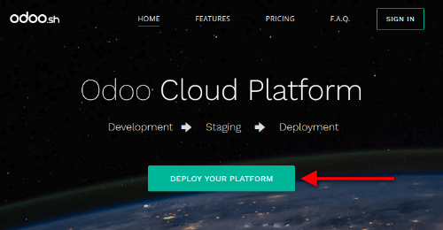
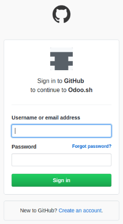
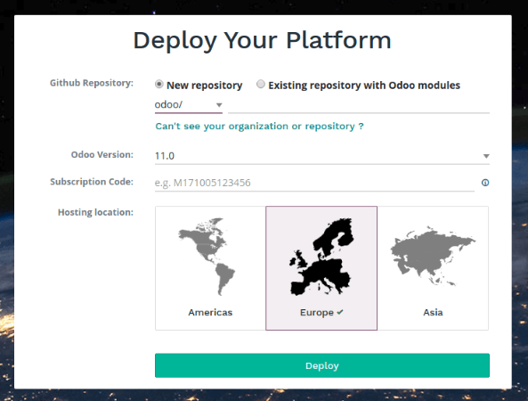
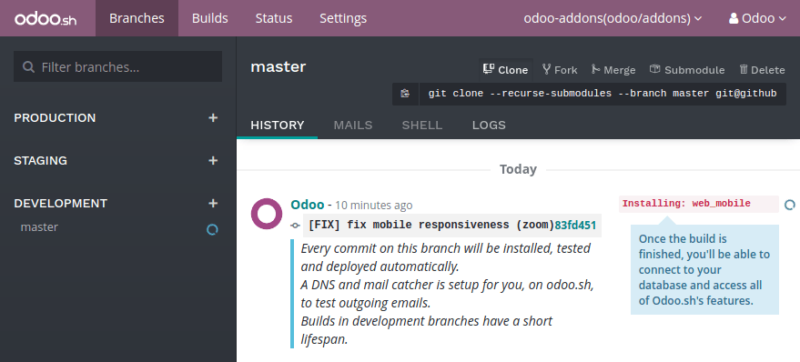
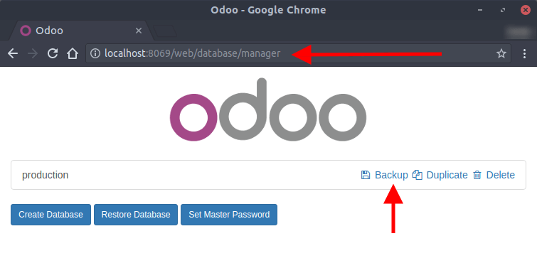
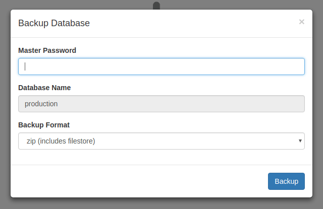
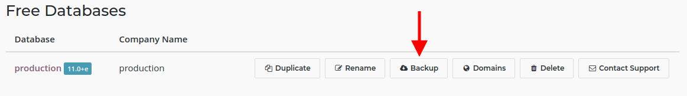
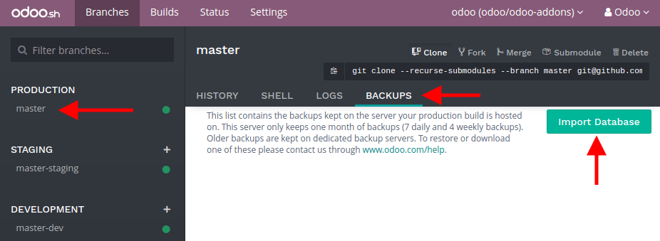
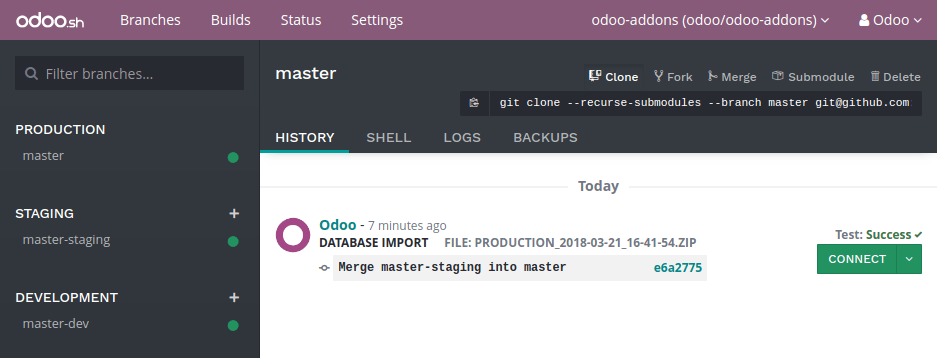

Deploy your platform
Go to Odoo.sh and hit the Deploy your platform button.
Sign in with Github
Sign in with your Github account. If you do not have an account yet, hit the Create an account link.
Submit your project
Choose if you want to start from scratch by creating a new repository, or if you want to use an existing repository.
Then, choose a name or select the repository you want to use.
Choose the Odoo version you want to use. If you plan to import an existing database or an existing set of applications, you might need to choose the according version. If you start from scratch, use the latest version.
Enter your subscription code. This is also called subscription referral, contract number or activation code.
It should be the code of your Enterprise subscription that includes Odoo.sh.
Partners can use their partnership codes to start a trial. Should their clients start a project, they ought to get an Enterprise subscription including Odoo.sh and use its subscription code. The partner will get the full amount as back commission. Contact your sales representative or account manager in order to get it.
When submitting the form, if you are notified your subscription is not valid, it either means:
- it is not an existing subscription,
- it is not a partnership subscription,
- it is an enterprise subscription, but which does not include Odoo.sh,
- it is neither a partnership subscription or an enterprise subscription (e.g. an online subscription).
In case of doubt with your subscription, please contact the Odoo support.
You're done !
You can start using Odoo.sh. Your first build is about to be created. You will soon be able to connect to your first database.
Import your database
You can import your database in your Odoo.sh project as long as this is an Odoo 10.0 or 11.0 database.
Push your modules in production
If you use community or custom modules, add them in a branch in your Github repository. Databases hosted on the Odoo.com online platform do not have any custom modules. Users of these databases can therefore skip this step.
You can structure your modules as you wish, Odoo.sh will automatically detect the folders containing Odoo addons. For instance, you can put all your modules folder in the root directory of your repository, or group the modules in folders by categories that you define (accounting, project, ...).
For community modules available in public Git repositories, you can also consider to add them using Submodules.
Then, either make this branch the production branch, or merge it into your production branch.
Download a backup
On-premise databases
Access the URL /web/database/manager of your on-premise database and download a backup.
Warning
If you cannot access the database manager, it may have been disabled by your system administrator. See the database manager security documentation.
You will need the master password of your database server. If you do not have it, contact your system administrator.
Choose a zip including the filestore as the backup format.
Odoo Online databases
Access your databases manager and download a backup of your database.
Warning
Saas releases (e.g. saas-*) are not supported on Odoo.sh.
Upload the backup
Then, in your Odoo.sh project, in the backups tab of your production branch, import the backup you just downloaded.
Once the backup imported, you can access the database using the Connect button in the history of the branch.
Check your outgoing email servers
There is a default mail server provided with Odoo.sh. To use it, there must be no enabled outgoing mail server configured in your database in (Developer mode must be activated).
After the import of your database, all outgoing email servers are disabled so you use the Odoo.sh email server provided by default.
Warning
Ports 25, 465 and 587 are blocked. If you want to use your own email servers, they must be configured on other ports.
Check your scheduled actions
All scheduled actions are disabled after the import.
This is to prevent your newly imported database to perform actions that could impact your running production, such as sending the mails remaining in the queue, processing mass mailings, or third-party services synchronization (Calendars, files hosting, ...).
If you plan to make the imported database your production, enable the scheduled actions you need. You can check what is enabled in the database of origin and enable the same actions in the imported database. Scheduled actions are located under .
Register your subscription
Your subscription is unlinked after the import.
The imported database is considered a duplicate by default and the enterprise subscription is therefore removed, as you can only have one database linked per subscription.
If you plan to make it your production, unlink your former database from the subscription, and register the newly imported database. Read the database registration documentation for instructions.